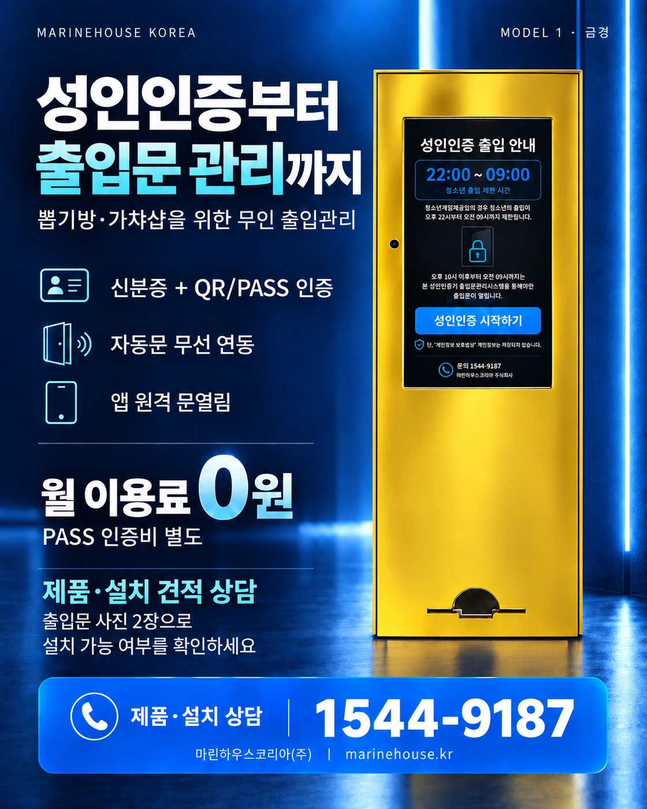

성인인증 키오스크
QR·PASS 간편인증과 실물 신분증 인증 구성을 통해 성인 여부 확인 절차를 운영할 수 있습니다.
마린하우스코리아의 성인인증 출입문관리 시스템은 성인인증 키오스크와 출입문 제어를 연동하여 무인매장의 출입을 관리하는 시스템입니다. 모델1의 실물 신분증 인식과 QR·PASS 간편인증을 바탕으로 현장 조건에 맞는 출입통제 방식을 제안합니다.
인증만 하는 장비가 아니라 실제 매장 출입 동선과 연결되는 출입관리 시스템을 구성합니다.
QR·PASS 간편인증과 실물 신분증 인증 구성을 통해 성인 여부 확인 절차를 운영할 수 있습니다.
성인인증 완료 결과를 출입문 제어장치와 연동하여 현장 출입 구조에 맞게 문 개방을 구성합니다.
무인매장과 무인 게임장 등 특정 시간대에 성인 확인이 필요한 현장의 출입관리를 지원합니다.
QR·PASS 또는 지원되는 신분증 인증 방식을 선택합니다.
인증 절차를 통해 출입에 필요한 성인 여부를 확인합니다.
인증 완료 결과를 현장 출입문 제어장치와 연동합니다.
정상 인증 시 설정된 방식에 따라 출입문이 개방됩니다.
마린하우스코리아는 무인기기 및 아케이드 장비 현장 경험을 기반으로 성인 확인이 필요한 무인매장의 출입문관리 구성을 상담합니다. 기존 출입문 구조, 전원, 설치 위치, 인증 방식 등을 확인한 뒤 적합한 장비 구성을 검토합니다.

성인 여부를 확인한 뒤 출입문 제어장치와 연동해 출입을 허용하거나 제한하는 무인매장용 출입관리 시스템입니다.
가능합니다. 설치 현장의 출입문 제어장치와 연동해 인증 완료 후 문이 열리도록 구성할 수 있습니다. 실제 연동 방식은 현장 도어락과 제어장치에 따라 달라집니다.
모델1은 QR·PASS 간편인증과 주민등록증·운전면허증 등 실물 신분증 인식을 함께 지원합니다. 세부 지원 범위는 도입 시 확인합니다.
매장 운영 조건과 출입문 제어 구성에 따라 특정 시간대에 성인인증 출입관리 방식이 적용되도록 구성 상담이 가능합니다.
무인매장, 무인 게임장 등 출입문과 성인 확인을 연동해야 하는 현장을 대상으로 설치 구성을 상담합니다.
현장에 설치된 전기정, 자동문, 도어 제어장치 등 기존 설비의 종류를 확인한 뒤 연동 가능 여부와 필요한 장비를 검토합니다.
마린하우스코리아 대표번호 1544-9187로 제품 구성, 출입문 연동과 설치 조건을 문의할 수 있습니다.
설치 장소와 기존 출입문 구조를 알려주시면 필요한 장비 구성과 연동 방식을 검토합니다.